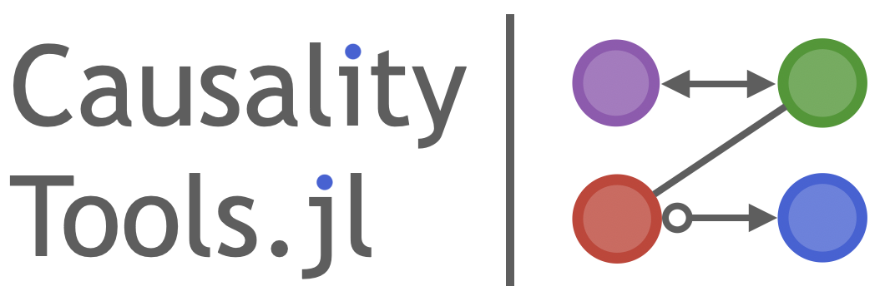

CausalityTools is a Julia package that provides algorithms for detecting dynamical influences and causal inference based on time series data, and other commonly used measures of dependence and association.
You are reading the development version of the documentation of CausalityTools.jl that will become version 2.0.
This package has been and is under heavy development. Don't hesitate to submit an issue if you find something that doesn't work or doesn't make sense, or if there's some functionality that you're missing. Pull requests are also very welcome!
Content
- Probability mass function estimation, either in one-dimensional (
Probabilitiesor multi-dimensional (ContingencyMatrix) form. - Generalized entropy estimation.
- Information measures, such as
mutualinfo,condmutualinfoandtransferentropy. along with a plethora of estimators for computation of discrete and continuous variants of these measures. - A generic cross-map interface for causal inference methods based on state space prediction methods. This includes measures such as
ConvergentCrossMappingandPairwiseAsymmetricInference.
Other measures are listed in the menu.
Goals
Causal inference, and quantification of association in general, is fundamental to most scientific disciplines. There exists a multitude of bivariate and multivariate association measures in the scientific literature. However, beyond the most basic measures, most methods aren't readily available for practical use. Most scientific papers don't provide code, which makes reproducing them difficult or impossible, without investing significant time and resources into deciphering and understanding the original papers to the point where an implementation is possible.
Our main goal with this package is to provide an easily extendible library of association measures, and an as-complete-as-possible set of their estimators. We also want to lower the entry-point to the field of causal inference and association quantification, by providing well-documented implementations of literature methods with runnable code examples.
API design
Central to the API design is clarifying naming convention/confusion that inevitably arises when diving into the literature. Our API clearly distinguishes between methods that are conceptually the same but named differently in the literature due to differing estimation strategies, from methods that actually have different definitions.
We have taken great care to make sure that estimators are reusable and modular. The power of this design really shines when computing things like conditional mutual information, which can be estimated in more than 20 different ways. Functions have the the general form
f([measure], estimator, input_data...)
# Some examples
condmutualinfo(CMIShannon(base = 2), ValueHistogram(3), x, y, z)
condmutualinfo(CMIRenyiJizba(base = 2), KSG2(k = 5), x, y, z)
condmutualinfo(CMIRenyiJizba(base = 2), KSG2(k = 5), x, y, z)
condmutualinfo(CMIRenyiPoczos(base = 2), PoczosSchneiderCMI(k = 10), x, y, z)This modular design really shines when it comes to independence testing and causal graph inference. You can essentially test the performance of any independence measure with any estimator, as long as its implemented (and if it's not, submit a PR or issue!). We hope that this will both ease reproduction of existing literature results, and spawn new research. Please let us know if you use the package for something useful, or publish something based on it!
Maintainers and contributors
The CausalityTools.jl software is maintained by Kristian Agasøster Haaga, who also curates and writes this documentation. Significant contributions to the API and documentation design has been made by George Datseris, which also co-authors ComplexityMeasures.jl, which we develop in tandem with this package.
A complete list of contributors to this repo are listed on the main Github page. Some important contributions are:
- Norbert Genera contributed bug reports and investigations that led to subsequent improvements for the pairwise asymmetric inference algorithm and an improved cross mapping API.
- David Diego's contributions were invaluable in the initial stages of development. His MATLAB code provided the basis for several transfer entropy methods and binning-related code.
- George Datseris also ported KSG1 and KSG2 mutual information estimators to Neighborhood.jl.
- Bjarte Hannisdal provided tutorials for mutual information.
- Tor Einar Møller contributed to cross-mapping methods in initial stages of development.
Many individuals has contributed code to other packages in the JuliaDynamics ecosystem which we use here. Contributors are listed in the respective GitHub repos and webpages.
Input data
Input data for CausalityTools are given as:
- Univariate timeseries, which are given as standard Julia
Vectors. - Multivariate timeseries, datasets, or state space sets, which are given as
Datasets. Many methods convert timeseries inputs toDatasetfor faster internal computations. - Categorical data can be used with
ContingencyMatrixto compute various information theoretic measures and is represented using any iterable whose elements can be any arbitrarily complex data type (as long as it's hashable), for exampleVector{String},{Vector{Int}}, orVector{Tuple{Int, String}}.
StateSpaceSets.Dataset — TypeDataset{D, T} <: AbstractDataset{D,T}A dedicated interface for datasets. It contains equally-sized datapoints of length D, represented by SVector{D, T}. These data are a standard Julia Vector{SVector}, and can be obtained with vec(dataset).
When indexed with 1 index, a dataset is like a vector of datapoints. When indexed with 2 indices it behaves like a matrix that has each of the columns be the timeseries of each of the variables.
Dataset also supports most sensible operations like append!, push!, hcat, eachrow, among others, and when iterated over, it iterates over its contained points.
Description of indexing
In the following let i, j be integers, typeof(data) <: AbstractDataset and v1, v2 be <: AbstractVector{Int} (v1, v2 could also be ranges, and for massive performance benefits make v2 an SVector{X, Int}).
data[i] == data[i, :]gives theith datapoint (returns anSVector)data[v1] == data[v1, :], returns aDatasetwith the points in those indices.data[:, j]gives thejth variable timeseries, asVectordata[v1, v2], data[:, v2]returns aDatasetwith the appropriate entries (first indices being "time"/point index, while second being variables)data[i, j]value of thejth variable, at theith timepoint
Use Matrix(dataset) or Dataset(matrix) to convert. It is assumed that each column of the matrix is one variable. If you have various timeseries vectors x, y, z, ... pass them like Dataset(x, y, z, ...). You can use columns(dataset) to obtain the reverse, i.e. all columns of the dataset in a tuple.
Related packages
- TransferEntropy.jl previously provided mutual infromation and transfer entropy estimators. These have been re-implemented from scratch and moved here.